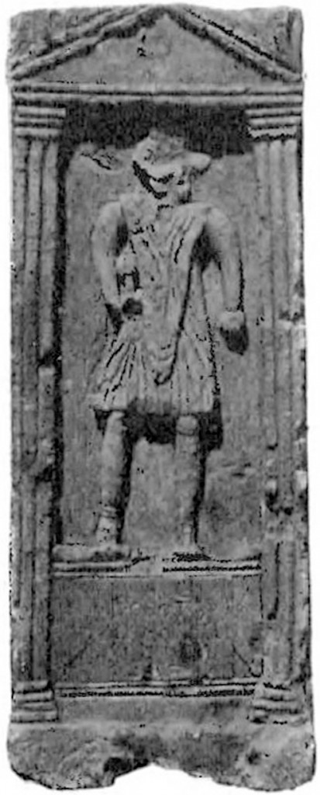
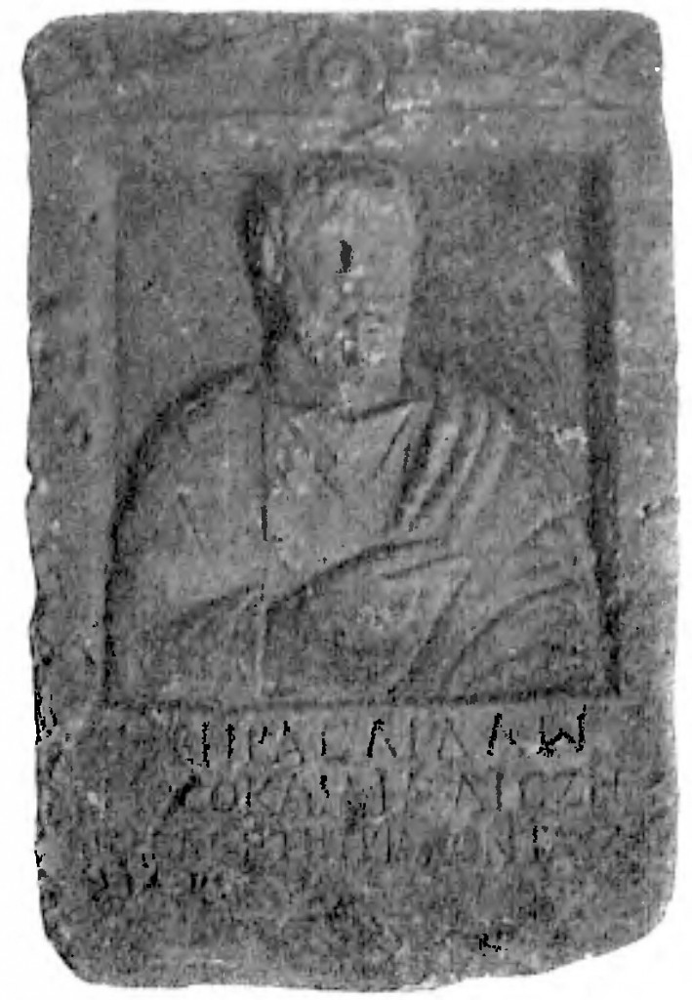
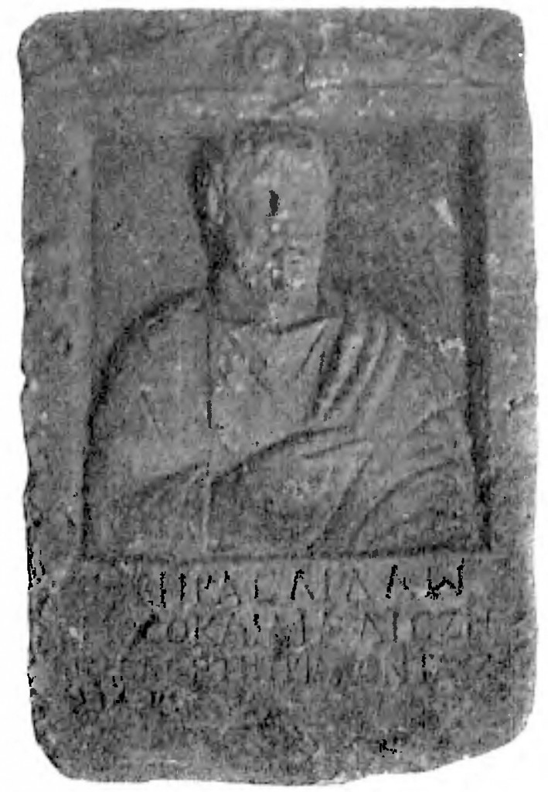

{kind=link}
Рис. 1. Портрет Арістея Проконесського, створений Ахіллом 11 лютого 621 р. до н.е.
11(24) лютого 2016 р. виповнюється 2750 років від дня народження засновника античної культури Арістея Проконесського, якій народився в Ольвії-1 (Миколаїв). Місто було розташоване на Табірному полі Миколаєва біля Алібанту (археологічна пам’ятка «Дикий Сад») і сьогодні воно все забудоване.
Ця стаття є наслідком моїх 35-річних досліджень навколо вирішення гомерівського питання. В Миколаєві видані книжки: «Місто Святого Миколая (Стародавня історія)» (2000), «Гомер. Імманентна біографія» (2001); «Екзампей» (2005); монографія «Тайни «Слова о полку Ігоревім» (2005). У 2008 р. в «Іліаді», «Одіссеї», Гімнах, творах Гесіода і в «Аргонавтиці» Аполлонія Родоського були знайдені приховані автобіографічні вірші Гомера і розроблена методики їх читання. На базі цієї методики в лапідарних написах на плитах розшифровано біля 1200 (!) археологічних пам’ятників, які були знайдені археологами за 200 років (увага!) в Північному Причорномор’ї, а не в Греції. Після визначення авторства і датування кожного пам’ятника виявилося, що ці всі пам’ятники створили лише 6 авторів: Арістей Проконесський (734-640), Клеопатра (662-591), Гомер (657-581), Ахілл (657-609), Скіф (633-582) і Анахарсіс (620-513). Тут і надалі вказані роки до нової ери. Важливість цього акту важко переоцінити. По-перше, ці автографи дають нам право затвердити всіх цих авторів історичними особистостями. По-друге, дають можливість визнати цих авторів, нашими земляками, оскільки вони народилися і діяли саме тут в Північному Причорномор’ї. По-третє, велика і різнобарвна база опрацьованих першоджерел свідчить про працездатність методики читання прихованих текстів. Статті про це розміщені на сайтах: моєму «Гомер і Атлантида» та міжнародному – «Academia.edu». Сьогодні йде робота над підготовкою наукового, багатотомного, «Довідника прихованих текстів стародавніх першоджерел України» про невідому історію Кіммерії, Скіфії, Християнства та Київської Русі.
Родоначальник скіфського роду кіммерійський цар, Таргітай (16.07.776-8.10.696), 7 серпня 753 р. (одночасно із заснуванням Риму!) тут, на території сучасного Миколаєва побудував три міста: Ольвію-1 (Табірне поле), Борей (на місці будинку Адміралтейства) і Нісон (Широка Балка). Ольвіей-1 було назване місто на честь його доньки Сфено «Щасливою». Місто Борей – на честь Таргітая, як «Північного» царя, а місто Нісон «Плавців по морям» на честь моряків. Некрополь Борея біля центрального входу в Суднобудівельний завод ім. 61-го комунара нашими археологами вже частково розкопаний так само, як і місто Нісон в Широкій балці. З покоління в покоління в роду Таргітая передавалося, що вони є нащадками атлантів, які заснували тут своє місто, яке Гомер в «Одіссеї» (XXIV, 304) назвав Алібантом. В цьому гекзаметрі він зізнається: «Я народився в Алібанті», тобто в «Філі померлих». Те, що Алібант був мертвим, коли сюди прийшов Таргітай, відповідає дійсності. Археологи О. Смирнов, К. Горбенко і Ю. Гребенников визначили граничні дати існування «Дикого Саду»: 1250-900 рр. Тому Арістей Проконесський розмістив тут Аїд, а Гомер прозвав це місто Алібантом і Аїдом. В «Одіссеї» (XI, 515) вказане точне положення Аїду – біля злиття Стіксу (Інгулу) і Коциту (П. Бугу).
З серпня 758 р. Таргітай, як колоніст філи Гілея, входив до складу Пританії, яка складалася з 10 філій. В ній були представлені інші грецькі колонії в Афінах. В раду Пританії входило 500 представників, по 50 чоловік від кожної філи. Раз на рік біля місяця кожна з них керувала Пританією по жеребу. Ця традиція була започаткована ще за часи існування Атлантиди та Алібанту. Гілея фактично була коморою Стародавньої Греції. Саме завдяки продажу зерна Таргітай побудував тут три вищезгадані міста, в яких мешкали також троянці та греки торговці зерном. Крім того, Таргітай заснував на шляху до Греції ще два міста: в750 р. – Кіммеріду, це місто за часи Гомера називалося вже Елаєм (Седдюльбахір, Туреччина), а також в 743 р. – Тіру (Белгород-Дністровський, Одеська обл.).
Дружиною Таргітая була Клеобуліна (21.08.774 – 8.10.704), донька Зороастра (8.10.794 – 8.10.714), і його дружини, дочки фінікійського царя Кадма (27.08.819 – 8.10.751), якому приписують створення грецького алфавіту на основі фінікійського. Клеобуліна була пророчицею, і в неї народилося 3 доньки й 6 синів. Старшим був маг і віщун Мопс, а потім – Ліпоксай і 10 лютого 733 р.- Колоксай. Він був прозваний Атлантом за те, що, на місці загиблої Атлантиди, 7 вересня 695 р. заснував місто Євпатор (Керкінітіду). Одна з дочок Клеобуліни, Сфено (749-696), змалку навчилася читати й писати. Сам Таргітай був поетом і коли побачив, що Сфено полюбляє читати, кожен раз привозив їй книжки з Афін, Єгипту і Фінікії. Сфено збирала афоризми, загадки, шаради, акровірші. Вона першою потрапила на приховані вірші в П’ятикнижжі Мойсея. В 12 років Таргітай полюбив свою доньку Сфено і вона народила йому двох близнюків, а 11 лютого 734 р. в Ольвії-1 в неї народився Арпоксай («Жадібний» до знань). В 9 літ він став писати вірші краще за батька, мати ховала їх від Таргітая, але той вже відчув це і з’явилася заздрість. Сфено навчила Арпоксая читанню і складанню прихованих віршів. З 12-ти років він вже керував вітрильниками самостійно і плавав в різні міста Греції, виконуючи завдання матері, яка керувала в Гілеї продажем зерна. 16 травня 715 року на 34-річчі Сфено в Ольвії-1 Мопс попередив, що Таргітай разом зі Сфено загине за кордоном 8 жовтня від молодого хлопця. Таргітай відразу вислав в Тіру Ліпоксая, а Колаксая він послав раніше відбудовувати Кіммеріду (Седдюльбахір).
4 серпня 714 р. Таргітай вигнав 19 річного Арпоксая з Аїду і той поплив до Мілету. В 712 р. Арпоксай видав в Афінах свою першу поему «Про коштовні каміння» і як кращій поет Еллади в 23 роки отримав Пальмову гілку. В 708 р. Арпоксай винайшов пергамент і налагодив його виготовлення в Гілеї. До 7-річчя вигнання з Гілеї, 4 серпня 708 р., моряк Арістей зрізав волосся і залишив лише чуб (оселедець). Такий чуб носив і батько Гомера, моряк і вигнанець Лік. На цей час Арпоксай вже був олігархом, входив до ради п’ятисот, а 13 серпня 707 р. в 26 років був обраний до складу Дев’яти архонтів правителів Еллади. У 704 р. любитель його поезії, цар Боспору Фракійського, Аспорух, посватав Арпоксая за римлянку Клавдію. В Кілікії в 698 р. в Арпоксая і Клавдії народився улюблений син Автолік. 4 серпня 698 р. Арпоксай видав на пергаменті в Афінах першій епос Європи «Арімаспейю» на 400 сторінках в 3-х книжках. В епосі він прославив батьківщину Гілею, Аїд (Миколаїв) і своїх батьків Таргітая і Сфено. З цього часу він отримав ім’я Арістея («Знаменитого»), як перший поет Еллади.
У травні 697 р. Арістей з Клавдією і двома дітьми приїжджав до Аїду до батька й матері, але примирення було недовгим. Сфено він привіз багато цікавих книжок і «Арімаспейю», присвячену батькам. Арістей розхвалив всі достойності матері могутньому лідійському молодому царю Гігу (723-652), той прибув до Ольвії-1 і посватав за себе Сфено в 52-й рік її народження 16 травня 697 р. Гіг запросив до себе в Трою Таргітая і Сфено. Коли вони від’їжджали з Трої до себе в Гілею, Таргітай посварився з молодим Гігом. В точності з прогнозом Мопса, 26-річний Гіг 8 жовтня 696 р. вбив 80-річного Таргітая списом з наконечником морського скату. Сфено кинулася з кріпосних стін і розбилася. Арістей з Клавдією поховали батьків у Елаї (Седдюльбахір). Влада в Гілеї перейшла до Колоксая. Арістей відмовився від влади. Він знав, що брат його вважав іноземцем. При цьому, Арістей залишався з Колоксаєм у добрих стосунках і в голодні роки привозив кораблями хліб у три міста Аїду.
8 жовтня 691 р. (в хронології Арістея це була знакова дата – 85 день 85 року!) Арістей в Афінах зробив доповідь про історію загибелі Атлантиди 756 літ тому і про те, що його рід є нащадками атлантів, які тоді правили Грецією. Це не сподобалося грекам, бо вони вважали кіммерійців варварами. Він розповів, що Атлантида була розташована в Тавриді (Криму) на місці Кіркінітіди (Євпаторії) і загинула (в сучасній хронології) 8 жовтня 1447 р. після вибуху вулкану (Санторін) на острові Фера (Тера) від цунамі. Ця дата вибуху Санторіна збігається з науковими даними. Гомер пише, що велика хвиля пройшла сучасні протоки Дарданелли й Босфор, піднялася до рівня Гераклових стовпів, і змила Атлантиду у Понт (Чорне море) під час потужного землетрусу. За 4 дні до цього жерці попередили про це, і 10 видатних родів на 10 кораблях приплили до Гілеї (Миколаїв) і заснували тут своє місто.
27 вересня 681 р. Арістей заснував місто Феодосію. Автолік в 680 р. переїхав з Кілікії в Сідон (Сайда), тут у його дружини, гречанки Амфітеї, народилася 8 жовтня 677 р. мати Гомера, Клімена. 28 серпня 675 р. Арістей збудував місто Проконесс (Мармара) і там провів останні 35 років свого життя. На острові були величезні поклади білого мармуру, якій добувають і сьогодні. Як олігарх, Арістей накопичив свої статки завдяки продажу хліба, пергаменту і мармуру. Крім того, Арістей збагнув, що утаємничені тексти, написані на мармурі, здатні донести правду про їх життя крізь тисячоліття. Гомер пише в таємних віршах «Начал» Евкліда, що гербом міста Проконесс («Чуб, Оселедець») був тризуб Посейдона, головного бога Атлантиди. Отже, гербу України – як найменше 3,5 тисяча літ!
Батько Ахілла і Гомера, кіммерійський цар Лік, народився в 676 р. в Ольвії-1 у Спаргапейта і Майї, брата і сестри царя Колоксая (733-666), сина Таргітая. Майя, від Гіга народила Пана 4 квітня 674 р. в Пантикапеї «Ясла Пана». Ця дата вважається днем заснування нею цього міста. У 673 р. Арістей видав в Афінах «Епіграфи». А 10 квітня 672 р. у Майї в Ольвії-1 від Арістея народився неперевершений майстер Гефест, його псевдонімами були Леохар, Фідій, Зевксіп, за ними можна дослідити його творчість. В 9 років чоловік Майї, Спаргапіт, вигнав його, як нерідного, з Аїду. Гефест подався до Арістея в Проконесс, а, пройшовши його школу мистецтва, перебрався на Лемнос.
18 серпня 666 р. Гіг вбив Колаксая-Атланта. Влада в Гілеї перейшла до його сина, Спаргапейта, діда Гомера по батькові. Розгорілася 14-річна війна між Гігом і синами Колаксая. І знову Арістей, як старший з роду, мав право на царство і відмовився від влади. У 664 році він разом з Клавдією приїжджав в Гілею. На зворотному шляху з Ольвії-1 в Проконесс корабель зупинився на острові, нині Березань, і там від укусу змії 3 жовтня 664 р. загинула Клавдія. Це уточнення міфу про Орфея й Евридику.
В 13 років Лік закохався у 23-річну Іду, дочку Гіга й Клавдії. Гіг почав їх переслідувати в Аїді. Лік на кораблі, втікаючи від переслідування, відвіз її на Кавказ. Там в Іди в Схерії (Батумі) 28 жовтня 662 р. народилася Клеопатра, яка там росла до 7 років під опікою царів Алкіноя й Арети.
Лік в 659 р. плавав до Автоліка в Сідон. Там він закохався у Клімену, дочку Автоліка. Через рік за домовленістю він прислав корабель за нею до Сідону. Леда (Клімена) вже була вагітна від Зевса (Автоліка). По дорозі до Аїда на Кіпрі вона народила на кораблі Єлену Прекрасну 13 вересня 658 р. (Афродита народилася на Кіпрі з морської піни!). Через 20 днів вони прибули до Ольвії-1 (Миколаїв). 14 вересня 657 р. у Ліка і Клімени народилися близнюки, першім Зет (Гомер) в Ольвії-1, а 15 вересня в Бореї – Калаїд (Ахілл). В міфі про Ахілла йдеться, що при народженні мати його, тримаючи за п’ятку, опускала у води Стіксу (Інгулу), щоб збезсмертити, а на Інгулі був розміщений лише Борей.
13 серпня 652 р. в Пафлагонії, в битві біля Кітору, Спаргапейт помстився за батька і вбив Гіга. Встановився мир і Гефест в 19 літ повернувся з Лемносу додому в Аїді. Тут його від Спаргапейта ховали в печері (в сучасному Яхт-клубі) Майя і Клімена. Зі Схерії (Батумі) старша дочка Ліка, Клеопатра, з Ідою повернулися до Аїда в 654 р., коли Гомеру й Ахіллу було 3 роки. Дитинство в Аїді було щасливім в житті Клеопатри, Єлени, Зета і Калаїда. Про це вони не раз згадували в своїх творах. Батько Лік обучав синів і Клеопатру військовим, корабельним справам, астрономії й гіпнозу, Клімена вчила і Клеопатру з 3-ма своїми дітьми,- грамоті, мовам, літературі, історії, а Гефест – мистецтву. Мати Гомера називала себе кентавром Хіроном («Жорстким») вчителем. Гомер писав, що саме Клімена придумала для нього слово кентавр («поганий тавр»), з огляду на скіфа Пана, який народився в Тавриді.
 
 2.1. 2.2. 2.3. Рис. 2. Автографи Арістея Проконесського 704, 696 і 644 рр.
2.1. 2.2. 2.3. Рис. 2. Автографи Арістея Проконесського 704, 696 і 644 рр.
{kind=link}
Гефест навчився мистецтву у свого батька Арістея, якого греки невипадково прозвали Оленом («Рукастим»). Про це свідчать знайдені, переважно в Херсонесі, 31 автограф Арістея і це завдяки Анахарсісові. 4 жовтня 575 р. він заснував в Тавриді місто Херсонес (Севастополь), яке назвав так на честь сучасного миколаївського півострова. Анахарсіс передбачив, що це місто переживе Ольвію-2 і перевіз сюди прах матері, Пенелопи, і пам’ятники Арістея. На Рис. 2 показані три автографи Арістея Проконесського, написи яких виповнені на латинській мові. Прихований текст пам’ятника (Рис.2.1) із 29-річним автопортретом, присвячений 10-річчю вигнання Арістея з Аїду Таргітаєм, яке виповнилося 4 серпня 704 р. У пам’ятнику (Рис. 2.2) «трубач Клавдієвого легіону» сповістив про загибель батьків від Гіга 8 жовтня 696 р. і про народження 16 травня 696 р. Клавдією 2-х близнюків, брата і сестри. Третій пам’ятник є надгробком (Рис. 2.3), він присвячений смерті Автоліка 8 жовтня 646 р. Арістей написав, що поставив його 2-го листопаду 644 р. на цвинтарі в Елаї разом з Гомером.
У битві в Іонії Спаргапейт був підло вбитий в спину сином Гіга, Паном, 29 липня 646 р. А 3 вересня 646 р. батька Гомера Ліка (676-596) народ обрав царем Гілеї. З цієї нагоди на гроші Арістея його син Гефест в Аїді відлив золоте руно. Його вручили Ліку 3 вересня 646 р., як символ царської влади Гілеї. Руно зображено на золотій скіфській пекторалі IV в. (Рис. 3), ймовірно, ще існувало в ті часи.

Рис. 3. Фрагмент золотої скіфської пекторалі.
Відомо, що в античні часи багатство оцінювалося кількістю голів овець. Але, звертаю увагу, що головна ідея Арістея полягала в тому, що руно стало символом духовного багатства через те, що з нього виготовлявся пергамент! Можливо тому Гомер (зліва) тут правицею вищипує волосся на руні, як акт початку виготовлення пергаменту. Причому пектораль була присвячена 300-річчю виготовлення саме золотого руна Гефестом в Аїді. 50-й день створення пекторалі припав на день народження у 83-річчя скіфського царя Атея (справа), 3 вересня 346 р., нащадка Гомера в 7-му коліні (Рис.3).
Пан, молодший син Майї й брат Ліка, повернувся до Аїду і забажав одружитися з Єленою. Лік і Клімена швидко видали її заміж за Гефеста. Тоді він захопив у полон Клімену й Ахілла разом із золотим руном. Лік в битві з ним поранив його в руку. Пан спалив його 6 кораблів, що стояли на березі. В той час тут мешкало більше троянців, ніж ахейців, прибічників Ліка. Іда вбила свого чоловіка за те, що той захопив Ахілла для Пана. Лік з Ідою (матір’ю Клеопатри) змушений був тікати таємно в ночі до Арістея в Проконесс. За допомогою Клеопатри з Аїду уплили в травні 646 р. також Гомер і Єлена з Гефестом, які переховувалися у печерах. Так була саме тут, започаткована 20-річна Троянська війна.
Арістей допоміг Ліку влаштуватися в Елаї (Седдюльбахір), який збудував їх предок Таргітай. Гомер на початку 645 р. почав плавати на кораблі з Елаю в Проконесс до Арістея. Навчання тривало 5 років до його смерті. З усьому видно, що обидва вони обожнювали один одного. Арістей побачив у сині своєї онуки Клімени продовжувача своєї справи й навчив Гомера всім своїм не аби якім знанням. Саме тоді Арістей назвав Зета Платоном за широту його знань для його віку. А Зет ретельно вивчив «Арімаспейю» Арістея прийшов до висновку, що епос є оригінальним і ні в кого не запозиченим. Більше того, оскільки в епосі Таргітай був названий Гомером, цебто кіммерійцем, то на своє 13-річчя Зет прийняв ім’я Гомера для себе, як псевдонім. Це сподобалося Арістею і він йому подарував кубок. Разом Арістей і Гомер 4 роки розробляли план будівництва міста-фортеці Ольвії-2 (с. Парутине). Місце розміщення Арістей добре знав, а як моряк багато бачив фортець.
В Аїді Каллаїд (Ахілл) з 9 літ обучав дітей скіфів військовій справі. Цю справу він продовжив і у полоні, хоча мати та він сам знаходилися під постійною охороною військових Пана. Клімена на всяк випадок носила при собі кинджал і не підпускала до себе Пана. Клеопатра, як онучка Гіга, залишилася в Аїді, щоб допомогти звільнити з полону Клімену і Калаїда. Вела переговори з Паном, але він ні за які гроші не хотів їх звільняти. Калаїду 15 вересня 642 р. виповнювалося 15 років. Він виглядав досить рослим і потужним і міг бути загрозою Пану. Той вирішив у цей день його стратити. Про ці плани дізналася Клеопатра і швидко скликала з ранку всіх його юнаків, котрих набралася тисяча. Коли їх батьки прийшли до дому Калаїда на сучасному Табірному полі Миколаєва, то їх чекала ця тисяча, яка стала на захист свого вождя. Батьки відступили й не стали з ними воювати. З тих пір Калаїда прозвали А-хіллом («Один, як тисяча»)! Пан нищив їх родичів і повстала задача врятування Клімени й Ахілла.
Клеопатра прибула в Елай до 13-ліття Гомера. В 17 років дівчина провела корабель через два моря. Там в Елаї вона започаткувала Платонівську Академію, першими членами якої стали Арістей, Гефест, Клеопатра, Гомер і Ахілл. Арістей в 89 років вперше побачив і закохався в її красу, талант, і назвав своєю Музою. Там вона з Ліком і Гомером розробили план врятування Клімени й Ахілла. За цим планом у листопаді 642 р. до Борею прибув торгівельний корабель, начебто з Фінікії. Його привів друг Ліка, цар лікійській, Сарпедон. Клеопатра на день народження Клімени, 8 жовтня 642 р., напоїла її й умовила віддатися Панові. Вагітність мала знизити підозру до втечі. Поки «фінікійці» торгували, наступила зима, а потім і весна. До них всі в Аїді вже звикли. Наближалися роди Клімени. Пан з цього приводу влаштував бенкет у себе в Бореї. Пізно вночі Клімена й Ахілл відпросилися до дому, де їх чекала Клеопатра. Вона приспала гіпнозом охорону і всі вони, взяв з собою і Майю, спустилися до корабля. Там їх скіфи зі Стіксу (Інгулу) тихо відбуксували до Коциту (П. Бугу), а звідти вони вже поставили вітрила. В протоці Босфор у Клімени на кораблі народилася друга дочка від Пана, Клітемнестра.
20 липня 641 р. Арістей, приголомшений цією вдачею Клеопатри, запросив Ліка, Іду, Клімену, Клеопатру, Гомера й Ахілла до себе в Проконесс. Там він, як старійшина роду, склав Заповіт про передачу в Аїді Гілеї їм прав на володіння трьома містами, побудованими його батьком Таргітаєм. Клеопатру і Гомера олігарх призначив розпорядниками своїх грошей для будівництва Ольвії-2 (с. Парутине). Просив назвати його на честь міста Ольвії-1 (Миколаїв). Потім Арістей написав листа своєму другові, могутньому цареві Боспору Фракійського, Котію Аспоруху. А той написав листа Панові, що він є гарантом будівництва Ольвії-2. Якщо Пан надумає перешкодити Гомеру і Клеопатрі, то він буде мати справу з ним. Цей Заповіт від 20 липня 641 р. цитується в багатьох пам’ятниках, як право на володіння Гілеєю. Арістей заповідав його прах перевезти на батьківщину, а також просив на честь батька Таргітая в його день народження, 16 липня, раз на 4 роки влаштовувати Олімпіади. Арістей заповів за розробленим із Гомером програмами навчати дітей з 8 до 12 років. Першу школу для дітей з трьох міст Аїду, в якій навчали дітей грамоти, започаткувала мати Арістея, Сфено. Заняття проводилися щорічно з 4 жовтня до кінця квітня після 728 р. Арістей теж в цьому допомагав матері. Після них цю програму продовжили Майя, а потім Клімена і Клеопатра, аж до Анахарсіса, якій заснував гімназії спочатку в Ольвії-2, а потім в Ольвії-1. За 753-575 роки в Причорномор’ї Гілеї було збудовано кіммерійсько-скіфськими царями 11 міст: дві Ольвії, Борисфен, Нісон, Тіра, Євпатор, Феодосія, Пантікапей (Керчь), Никій (о-в Березань), Алектор (Очаків) і Херсонес (Севастополь). В них панував демократичний устрій, не було рабства і вони входили до Пританії в складі Гілеї, яка з 592 р. називалася Скіфією.
Арістей прищепив Гомерові любов до Єгипту і заповідав йому розшукати там детальні свідчення про Атлантиду, а разом з Клеопатрою він поставив їм завдання віднайти спосіб, як надрукувати свідчення про Атлантиду, бо греки й слухати не хотіли про те, що «варвари» колись володіли ними. Цей заповіт був виповнений Гомером в «Діалогах» Платона. Саме Арістей фактично створив інститут пам’яті та прищепив своїм нащадкам любов до історії батьківщини й своїм предкам. В їх роду відмічалися дні народження при житті та дати сконання предків, які працювали, як годинник. Будь кого не можуть не здивувати наведені тут точні дати подій такої давнини. Так от, саме Арістей на базі єгипетського розробив свій календар, якій майже не відрізнявся від сучасного. В ньому звичайний рік у 365 днів починався в день народження його батька Таргітая і це був 1-й день 1 року, якій сьогодні відповідає даті 16 липня 776 р. до н.е. За пропозицією Клеопатри в місяць Антестерій (лютий-березень) додавався 1 день у високосні роки. Дати подій відраховувалися в днях і роках від цієї початкової дати. Гомер, наприклад, народився в 61 д. 119 р. і це відповідає даті 14 вересня (776-119=) 657 р. Цим календарем, наприклад, користувалися нащадки Гомера, Євангелісти Лука й Іван Богослов у часи нової ери. Гефест намагався втілити цей календар у своїй філі, але Солон заборонив це. Тому цей календар залишився внутрішнім для роду Таргітая. І тоді повстала задача, як ввести в історію початкову дату календаря для майбутніх поколінь у вигляді, приємному для греків. Анахарсіс під псевдонімами Калліна і Павсанія, для цього видумав проведення Олімпіади в Греції, коли начебто записувалися вперше імена героїв. Так з’явилися календарні розрахунки по номерах проведених Олімпіад, фактично від дня народження Таргітая 16 липня 776 р. А у видуманих ним іменах перших переможців читається схований текст про Скіфа, переможця 10-ти скіфських Олімпіад. Анахарсіс писав 16 липня 520 р.: «Десятки послідовників в Іонії у Клеопатри й Скіфа після проведення першої Олімпіади в 1 д. 148 р.(16 липня 628 р.). Анахарсіс на 28-й Олімпіаді». Це пряме свідчення того, що Олімпійські ігри були започатковані в Кіммерії.
Арістей першим зауважив, що ми мешкаємо на земній кулі, він прищепив любов до геометрії Гомеру, який потім написав свої «Начала» під псевдонімом Евкліда, а також Піфагора. У 19 років Гомер приплив в Сідон (Сайду) до бабці Амфітеї й та йому подарувала велику наукову працю Арістея про ріку Океан, яка обтікає усю земну кулю. В описі щита Ахілла в «Іліаді» саме Океан обтікає сучасний миколаївський півострів. Арістей, як моряк, заклав основи астрономії і дав назви Північним сузір’ям. Мала і Велика Ведмедиці, а також сузір’я Лева були названі ним так через те, що миколаївський півострів має вигляд ведмедиці, або лева (мис Гіпполай – «Великий лев» у Геродота). «Арімаспейя» Арістея не дійшла до нас тому, що вона не про греків. Анахарсіс, виконуючі заповіт Гомера, писав 28 липня 521 р. до 60-річчя загибелі Гомера: «Клянуся, що останні 15 літ кожен рік видав власноручно в Афінах по 100 екземплярів «Іліади» і 850 екземплярів «Арімаспейї», як ліки проти смерті Арістея».
Збереглися тексти Арістея під псевдонімами Калліна й Анаксагора, в них читаються його приховані тексти. Як філософ і перший мудрець Арістей згадується під псевдонімами: Сократа, Пітака з Мітелени, Фалеса Мілетського, Левкіїпа, Ферекіда Сіросського. Як поет і бард він мав псевдоніми: Орфея, Олена, Гіппонакта, Ксанфа, Евмолпа, як поет-комедіограф і актор – Кратета Афінського і Тімарха, як скульптор. Арістей, як письменник і логограф під псевдонімом Гекатея з Мілету, написав «Землеопис», в якому вперше згадана і нанесена на одну з найдавніших європейських карт Скіфія і колонія Кіркінітида, де він позначив скіфське місто Кардіс. Тепер стало зрозуміло, що цим він позначив («Серце») Атлантиди. Найвагомішим здобутком Арістея є 31 напис на лапідарних пам’ятниках, які є автографами й щоденниками (Рис. 2). Вони дійшли до нас від автора – їм не має ціни. Ці автографи свідчать про те, що все, чим користувався Гомер і його оточення в методичному плані, було придумано Арістеєм і його батьками, Таргітаєм і Сфено. Без цих автографів дуже важко було би розібратися з тим, кому і що належить з них. В останньому автографі, складеному за 20 днів до сконання, він визнався в тому, що свідомо жертвує своїм життям, заради любові до Клеопатри. 21-річна Муза це зрозуміла заздалегідь і приплила з Аїду таємно в Проконесс 1 серпня 640 р. до 93-річного Арістея. Через 24 дні любовних втіх Орфей скінчався на руках у Музи 25 серпня 640 р. За три дні до сконання вчителя Гомер приплив до Проконессу і застав його при смерті в руках своєї сестри й дружини. На той час Клеопатра від Гомера вже народила в Аїді дочку Тіро і двох синів близнюків, Гелона й Агафірса.
На поховання першого поета Еллади в місто Проконесс з’їхалося багато шанувальників з Еллади, Фракії та Гілеї. Арістей заздалегідь підготував напис поминальну про себе і Гомер виставив її на міській площі. Прах Арістея після спалення Гомер поховав в Проконессі в тому кубку, якій подарував йому вчитель до 13-річчя. На день народження Арістея, 11 лютого 640 р., його син Гефест виготовив і поставив в Проконессі скульптурний пам’ятник батькові, а Гомер набив на ньому напис. Гомер вважав його найбільшим поетом і писав, що справедливий і радісний Арістей вивів його в люди. Слід сказати, що Гефест, Клеопатра, Гомер і Ахілл, як завжди це буває, велич його постаті зрозуміли лише після сконання. А далі все їх життя було виконанням тої програми, яку він встиг їм накреслити. Ахілл майже рік разом з Гомером бував в Проконессі, а і сам Арістей бував в Елаї. Гомер писав, що кожний його приїзд був святом. Олігарх привозив кожному і слугам подарунки й, шуткуючи, роздавав їх.
 
  4.1. 4.2. 4.3. Рис. 4. Портрети Арістея Проконесського виповнені Ахіллом
4.1. 4.2. 4.3. Рис. 4. Портрети Арістея Проконесського виповнені Ахіллом
{kind=link}
На Рис.4. показані 3 скульптурні портрети Арістея, які створені Ахіллом. Їм не має ціни, оскільки це прижиттєві портрети. Порівняйте Рис. 2 і Рис. 4, їх поєднує на верху трикутник, в центрі якого вписаний круг. Це є додатковим свідченням того, що три портрети Ахілла присвячені Арістею Проконесському. Першій портрет (Рис. 4.1) був зроблений Ахіллом в день свого 15-річчя, 15 вересня 641 р., під враженням першої зустрічі з Арістеєм, яка сталася відразу після того, як його було врятовано Клеопатрою з полону у Пана в Аїді. Через тиждень 20 липня 641 р. виповнювалося 90 років з дня народження дружини Клавдії й Арістей запросив у Проконесс всю родину, де зачитав складений ним Заповіт. Про це йдеться в прихованому тексті 1-го пам’ятника. Очевидно, в Арістея був портрет Клавдії й Ахілл показав тут Орфея з Еврідікою. Через 7 років, 11 лютого 634 р., наближалося 100-річчя Арістея, яке вони відмічали у вигнанні в Елаї всією родиною. Ахілл виповнив другий портрет Арістея (Рис. 4.2) на своє 23-річчя, 15 вересня 634 р. Цей портрет був зроблений Ахіллом на спори з Гомером і Клеопатрою. Вони казали, що він не зможе передати всю велич Учителя. А на 43-й рік народження матері, Клімени, Ахілл зробив їй подарунок (Рис. 4.3), на якому зобразив родину Арістея в його 43 роки. Клавдії було 40 років, а їх сину Автоліку, батькові Клімени, було 7 рочків. Четвертий, найбільш вдалий портрет (Рис. 1), Ахілл зробив 11 лютого 621 р. до 113-річчя Арістея. В прихованому тексті напису Ахілл відмітив, що його, як адмірала, було визнано Героєм Еллади в Парфеноні Афін, він дуже пишався цим.
Арістей ще при житті влаштував Ліка, Гомера й Ахілла на службу в Трою. Відтоді з 15 літ Гомер почав виконувати щорічно свої 12 подвигів Геракла для Париса (Еврістея) до 27 років, а Ахілл, як Тесея. Батько Лік був великим стратегом. У 20 років до Єлени сваталися майже всі герої Еллади, але він віддав її за Менелая, а за його могутнього брата Агамемнона – Клітемнестру. Потім він запропонував Приамові брати податки за проходження кораблів у Понт (Чорне море) через Геллеспонт (Дарданелли). Всіє родиною вони почали в Елаї будувати кораблі й створили флот. Відразу після цього Мілет розорився й об’явив війну Лідії (Трої). А тут Парис вкрав Єлену у Менелая і не повертав її ні за які гроші, що йому пропонував багатий Агамемнон. В травні 630 р. почалася 10-річна морська Троянська війна, в якій Лік і Ахілл зі своїм флотом, після захоплення Єлени, перейшли на бік греків.
Весь цей час Клеопатра залишалася в Аїді допоки Пан її насильно не захопив і вона від нього народила спочатку двох близнюків, а потім Перса, свого майбутнього вбивцю. Через 3 роки вона втекла від Пана, а дітей і золоте руно відвезла на Кавказ у Схерію (Батумі). На два роки вона оселилася на Лесбосі, де брала уроки гри на інструментах і співу у сірійських музикантів і співаків. Звідти вона плавала до Афін і перша її поява була фурором. Чоловіки були вражені тим, як вона вправно керувала кораблем, а потім амазонка вразила своїм файним одягом, співом і віршами жінок, які завжди збиралися навколо неї. 2 серпня 631 р. Клеопатра під псевдонімом Сапфо в Афінах була визнана першою поетесою Еллади, а 28 жовтня вона заснувала на сучасному острові Березань місто Никій. Це був плацдарм для проведення Олімпіад на Тендрівській косі й для будівництва Ольвії-2 (с. Парутине).
Наприкінці 630 р. Клеопатра відправилася в Схерію (Батумі), забрала дітей і золоте руно, яке вирішила відвезти Ліку в Елай. Але коли вона підплила до Боспору, то течія в ньому звернулася на протилежну сучасній. В протоці зробився великий вір Харибда, якій перекрив прохід. Вона вивчила як працює вір і зрозуміла, що для цього треба було притиснутися до грязьового вулкану Скілли й потім пройти між скелями Планкт, на яких міг корабель розламатися. Діючи рішуче і швидко вона 17 липня 629 р., як кормча, першою провела корабель між Скіллою і Харибдою через Планкти, ризикуючи життям дітей, і привезла до батька золоте руно в Елай. Це і стало сюжетом Гомеру для «Аргонавтики».
В цей час вже йшла морська Троянська війна (630-620 рр.), в ході якої ескадри Ахілла й Агамемнона знищили біля 800 троянських кораблів. Після цього кораблі можна було залишати на березі біля Трої, не страхаючись атак з моря. Гомер в цій війні не приймав участі й 7 років шукав свідчення про Атлантиду в Єгипті. Не дивлячись на війну, Ахілл не забував про Клеопатру і кожен свій, Гомера і її день народження вони відмічали в Никії. 16 липня 628 р. Клеопатра з Ахіллом, виконуючі Заповіт Арістея, провели першу Скіфську Олімпіаду на Понтійському стадіоні (Тендрівська коса), в яких Ахілл потім 5 разів вигравав змагання з бігу. Відразу після проведення 2-ї Олімпіади, 20 липня 624 р., Клеопатра разом з Ахіллом заклали місто Ольвію-2 за планом Арістея. Ахілл зробив скульптуру Зевса, оточеного 9-ю Музами й поставив її на горі, як маяк, для моряків. До цієї події Клеопатра зібрала там перших 727 поселенців греків, які сіяли, збирали та продавали врожай. Через 7 років Клеопатра почала будувати фортечні мури навколо Ольвії-2 і звела їх по суші за 24 роки до своєї загибелі в 591 р.
Гомер повернувся в Елай після того, як Ахілла за розгром троянського флоту відзначили в Парфеноні Афін 14 серпня 621 р. і назвали Героєм Еллади. Кінцева фаза морської війни проходила в Чорному морі й на неї встиг-таки Гомер. Останні 20 троянських кораблів сховалися у Пана в Аїді (Миколаїв) і загрожували будівництву фортечних мурів Ольвії-2 (село Парутине). Клеопатра звернулася до Ахілла і той з Гомером прибув до неї в Никій з ескадрою із 10 кораблів. 10 і 27 березня 621 р. відбулося два морських бою, в яких окремими кораблями командували: Ахілл, Гомер, 17 річний Гіл (Скіф) і, мати 7-ми дітей, Клеопатра. При цьому троянські кораблі були вдвічі більшими за грецькі. Першій бій відбувся біля острова Березань, в ньому Ахілл знищив 4 кораблі на відстані грецьким вогнем. На Рис. 5. показний прорис тексту і малюнку. Розшифровка свідчить про те, що це був подарунок Ахілла Клеопатрі в зв’язку із захистом ними обома в 55-річчя, їх батька, Ліка, 13 травня 621 р. З рисунку видно, як під час бою корабель Ахілла проходить між двома троянськими й закидає їх грецьким вогнем.

Рис. 5. Графіті на глечику, знайденому в Тірі
А другий бій відбувся біля острова Левкі (Змеїного). Троянці боялися зближуватися з греками. Ахілл зробив засаду за островом, а біля Березані залишив один корабель Гіла (Скіфа), який мужньо привів за собою весь їх флот до Левкі. І там почався близький бій. Легкі й швидкі кораблі греків вийшли з засади, палили їх грецьким вогнем, таранили важкі незграбні кораблі троянців і всі їх потопили без втрат своїх. Клеопатра потім у записках Феано згадувала про цей бій з жахом. Після цього Гомер вперше відвідав Ольвію-2 і, побачивши роботу Ахілла скульптури Зевса в оточені 9-ти Муз, зауважив, що Ахілл намагався перевершити самого Гефеста. Місто його дуже обрадувало, оскільки на другому році тут вже діяв театр, в якому ставилися п’єси Арістея, Гомера і Клеопатри. Тоді ж Гомер побував вперше і на 3-й Олімпіаді на Тендрівській косі. 8 вересня 620 р. в Елаї у Пенелопи й Гомера народився Арістон (Анахарсіс), а в жовтні з’явилася комета Галея. Потім вона з’явилася на його 75-річчя і це є найдавніші свідчення про неї. Сухопутна Троянська війна тривала з вересня 619 р. до березня 609 р.
8 жовтня 612 р., помер Котій Аспорух, цар Фракійського Боспору, і повстала загроза знищення Паном будівництва Ольвії-2. Тоді Клеопатра послала свою і Гомера 34-річну доньку Тіро до Пана в Аїд, після начебто сварки з нею. Той у своє 63-річчя запропонував їй обрати дату їх весілля. На бенкеті в Бореї, у присутності уславлених будинів, 13 травня 611 р., Тіро отруїла Пана. І це був подарунок до 65-річчя Ліка. В Аїді почалася боротьба за владу між 3-ма синами Клеопатри від Гомера і 3-ма її синами від Пана, яких очолив Перс. Клеопатра послала Гіла (Скіфа) за допомогою до Трої, де воювали батько і брати. За два місяці при підтримці Агамемнона й Ахілла, Гомер і Лік зібрали 54 кораблі й 3000 воїнів. Ахіллову тисячу з цих воїнів залишили вдома, щоб затвердити владу. 14 серпня 610 р. армада прибула до Ольвії-1. Воїни першого корабля з Ліком були одягнути у троянську форму, щоб не налякати Перса і його троянців. Лік вручив їм усім подарунки – кельтські сокири, а Клімена – посуд Клеопатрі. Гомер описав це в таємних віршах 18-ї пісні «Іліади». А через рік після того, як про це дізнався з прихованих віршів, читаю в газетах – археологи поряд з «Диким Садом» (в передмісті Ольвії-1?) знайшли колекцію кельтських сокир! Бувають дивовижні збіжності… Через 35 літ влада в Аїді повернулася до Ліка. Він залишив тут царювати Клеопатру, а сам з Гомером повернувся до Трої. В жовтні 610 р. Клеопатра вигнала Перса з Аїду. Гілу (Скіфу) доручила керувати 3-ма містами в Аїді, а сама повернулася в Никію до будівництва Ольвії-2, проведень Олімпіад і видання творів Гомера.
Ще до відїзду з Аїду Ліка, Гомера і Клімени, Клеопатра зранку заклала в сучасному Табірному полі храм Деметри на честь матері Гомера, Клімени, і її діда, Арістея. Увечорі на бенкеті в Аїді 8 жовтня 610 р. Клімена з нагоди її 67-ліття за рік до загибелі, мати заповіла Гомеру, щоб він її поховав в Никії (о-в Березань) і вклав у могилу камінь з написом, що вона є матір’ю Гомера. Ахілл у цей час залишився біля Трої й з армадою не плавав до Аїду. 15 вересня 609 р. на очах у всіх під Троєю Ахілл вбив Гектора. Клеопатра неодноразово попереджала його про те, що Пріам і Парис намагаються підсунути йому молоду особу і вбити його. Але він не сприймав ні її листів, ні попереджень Гомера. Гомер в той час поплив до Клеопатри в Никій. Ахілл відпустив охорону, і залишився на ніч у 16-річної троянки Поліксени. А вранці 8 жовтня 609 р., до ванни зайшли 40 воїнів Париса і ременями його задушили. От вам і міф про п’ятку Ахілла, в яку начебто влучив Парис при штурмі Трої. А це сталося за півроку до штурму. Так що, ахіллесовою п’ятою будь-якого героя є жінка. Хоча, за словами Гомера, 20 жінок потім розтерзали Поліксену…
Гомер з Клеопатрою, дізнавшись про загибель брата, на кораблі з Никії (Березань) негайно прибули до Трої. Перед цим Лік лише з третьої спроби викупив тіло сина, а зброю Пріам і Парис залишили собі. Клеопатра, як онучка Гіга, мала величезний авторитет в Трої. Вона зайшла у місто і прокляла його за підле вбивство брата, якій у чесному відкритому бою вбив Гектора. Клеопатра забрала зброю Ахілла і Єлену – для омивання ніг брата. А потім вирішила ще одну проблему – греки вимагали поховати Героя Еллади в Афінах. Але Клеопатра завбачливо взяла з собою агораномів 3-х міст Аїду і вони запевнили греків, що Ахілл народився в Бореї Гілеї. 40 днів на сучасному Табірному полі біля Ольвії-1 тисячі скіфів і греків звідусіль поминали героя. Клеопатра викупила дім в Ольвії-1, де влаштувала музей з доробків, поезій і зброї Ахілла. Під час прощання Клеопатра закликала прилюдно Гомера створити епос про Ахілла, щоб він назавжди залишився живим у нащадків. Потім тіло спалили й прах поховали, як адмірала, на «плавучому» острові Левкі (Зміїному). 12 березня 609 р. Троя була спалена, а Лік з сином Ахілла, Неоптолемом (Периклом), помстилися за нього і вбили Пріама з Парисом.
Після спалення Трої Гомер відправився з 12 кораблями в плавання. Щоправда, через 15 днів плавання в Егейському морі він попав в країну Лотофагів («Смачна їжа»), якою виявився Елай («Оліва»). Після прибуття до додому, місяць він не міг відірвати моряків від («смачної їжи») жінок. Звідти відправилися у Понт (Чорне море). В бухті Лестригонів (м. Балаклава) 16 липня 608 р., від потужного землетрусу загинули 11 кораблів. Гомер уцілів тому, що не завів корабель у бухту. А коли приплив до Цирцеї (Клеопатри) на острів Ею (Березань), то батько Лік привіз з Елаю мати Клімену. Її стратив багатий молодик – помстився за Трою. Поховали прах її в Некрополі й батько відплив до Елаю. Гомер залишився на рік, бо не міг явитися до дружин і дітей 600 загиблих моряків. Тут він зробив напис на камені. Детально про це йдеться в статті «П’ять автографів Гомера», розміщеної на сайті «Гомер і Атлантида» і в книжці «Гомер. Імманентна біографія». Цей камінь в Некрополі Березані знайшов ще в 1900 р. любитель археології Скадовський. Він не зберігся, але від нього залишилися напис і прорис. По кресленню Некрополю В.В. Лапіна 1960-х років, я знайшов місто могили матері Гомера в 2002 р. Потім з керівником експедиції Інституту археології НАН України В.В. Назаровим, археологом від Бога, добралися до неї збоку моря. Він обслідував її і запевнив, що могила вже була зруйнована під час війни. Після трагічної загибелі В.В. Назарова в 2004 р. ерозія моря поглинула й могилу Клімени…
Приведу ще одну цікаву напис (Рис. 6). Ця випадкова знахідка на території некрополю Ольвії-2 (с. Парутине) була знайдена під час розкопок в 1920 р. С.А. Семеновим-Зусером. А потім була передана краєзнавчому музею Миколаєва. Не перевіряв – чи збереглася вона через 96 р.? Виявилося з прихованого тексту, що це є автограф Гомера, складений ним 21 липня 607 р. Після року перебування його, як Одіссея, на острові Еї (Березань) в місті Никії, Гомер відпливав до Елаю на одному кораблі. Він вирішив, залишити Музі напис, присвячену Ахіллові в зв’язку з наближенням 50-річчя їх обох. Напис цікава тим, що в ній Гомер дав характеристику своєму братові Ахіллу, як людини й воїна. І скажіть, що вона не відповідає християнській моралі за 6 століть до Різдва Христова?!

Рис.6. Автограф Гомера від 21.07.607 р.
Ось як читається прихований текст: «1). Вождь Ахілл загинув у 85 д. 167 р. Гнів божій, Кіанеї роздавили Тіфона, у 85 день у 16-річній діви. Відгук брата Гомера. 2). Перед відправленням корабля з острова Клеопатри за 57 днів до 50-річчя Ахілла, Гомер оспівує брата в 5 д. 179 р. заради спокути його провини. 3). Для нащадків повідомляю: брат був добрим для багатьох, зразково взірцевим, сам собою великий, виключно порядним. 4). Ахілл був чесним, бурним, в житті захоплювався багатьом, обов’язковим у виконанні повинності, чтив закони та дотримувався даного слова. 5). Інших правителів чесних Таргітая, Сфено, мудрого Арістея Проконесського, завжди хвалив. Сам себе оцінював стримано. 6). Він народжений відкритим бійцем, в гніві різкий в ударі смертному, на війні небезпечний, корисний більше за всіх. Оточення його поважало, командуванням тяготився. 7). Свідчення Гомера про мого брата Ахілла. Після вбивства в 85 день поховали з коханою Клеопатрою Ахілла в 170 д. 167 р. гідно за законами Таргітая й Арістея поліса Гілеї. 8). Шануючи заповіт Арістея проводити Олімпіади в день народження Таргітая, в 1-й день 168 року провели змагання 6-ї скіфської Олімпіади на батьківщині. 9). Щорічно сам Ахілл з 1 д. 148 р. (в малих Олімпіадах) брав участь з користю для країни. Ахілл був переможцем країни Гілеї, це важлива справа. 10). Ахіллу похвала сама розійшлася, посилилася в Аїді ще до загибелі біля Трої, яка була спланована Пріамом необережному в 85 д. 167 р.».
На початку 598 р. в Афінах був об’явлений перший конкурс на приз Філомеліда серед поетів Еллади. Судили троє архонтів: Солон, Філомелід і Нестор. Клеопатра представила на нього перші 5-ть пісень «Одіссеї», а її син від Пана, Перс, під виглядом Гесіода, таємно надав «Теогонію». Він переписав у Гомера цей твір з дозволу Пенелопи, коли Гомер 8 років був запертий на Огигському (Криму). Солон і Філомелід віддали перевагу «грекові» Гесіоду тому, що Гомер був варваром. Вся родина Гомера була шокована. Клеопатра прибула до Солону в Афіни й розповіла йому, що утворив її син, а через 2 місяці привезла оригінал з Никії та довела, що автором твору був Гомер. Солон був вражений тим, як легко варвару обманути еллінів. 14 вересня 598 р. Гефест подарував йому золоту кінну статуетку Арістея. В 597 р. «Іліада» була виконана на 1-х Панафінеях з великим успіхом. І саме з нею друге змагання виграв Гомер. Солон особисто прибув до Калліополю і вручив кубок Філомеліда на його день народження 14 вересня 594 р. Кубок був зроблений у формі корабельного парусу, Гомер пишався ним і привозив його в Гілею. До цього в Афінах 26 липня 594 р. на змаганні серед 12 жерців народ Афін обрав мудрецем Еллади сина Гомера від Пенелопи, Анахарсіса. А 3 жовтня 594 р. після батька кращим бардом Еллади був визнаний син Гомера і Клеопатри, Анакреонт (Гіл-Скіф). Як пише Гомер, Солон назвав поезію моряка «таврійським диханням». Про поезію Сапфо (Клеопатри) Солон казав, що помру, якщо не вивчу її вірші напам’ять. Схоже на то, що цей 594 р. був щасливішим у житті Гомера.
8 жовтня 596 р. з нагоди 100-річчя з дня загибелі Таргітая і Сфено Клеопатра зібрала в Аїді родину. Лік залишився в Елаї. Анахарсіс на кораблі доставив Гомера до Аїду. Клеопатра вирішила перейменувати місто Борей в Борисфен, щоб поєднати імена Таргітая (Борея) і Сфено в одній назві. Так виникла назва Дніпра, як Борисфена, бо за часи Гомера Інгул вважався гирлом Дніпра. В цей час, 28 вересня 586 р., сини Пайрісада і Перс вбили 79-річного Ліка. Анахарсісу довелося негайно повертатися з тілом Ліка до Гомера, а від нього – в Никій до Клеопатри. На сучасному Табірному полі 40 днів вся Скіфія прощалася з великим царем і стратегом, який таки виграв 20-річну Троянську війну. За кіммерійською традицією його спалили з оселедцем, а прах його поховали на острові Березань. Гомер дав завдання Анахарсісові розвідати причетних до вбивства в Елаї, а Гілу (Скіфу) – через рік помститися їм в Елаї. 25 серпня 595 р. в Ольвії-2 (с. Парутине) Клеопатра встановила першій пам’ятник Арістею роботи Гефеста до 45 річчя його сконання. Напис на ньому зробив Гомер. Анахарсіс вияснив винуватців, а Гіл (Скіф) підготував 5 кораблів з 283 воїнами для помсти за Ліка. Клеопатра доручила Гілу й Анахарсісу на зворотному шляху забрати прах Арістея в Проконессі й привезти його в Никій (о-в Березань), що і було зроблено 27 вересня 595 р. Прах Арістея поховали з Ліком на острові Березань.
28 жовтня 592 р. Клеопатра, маючи беззаперечний авторитет, зібрала на своє 70-річчя майже всю Скіфію і греків з Еллади. Гомер їй подарував золоту кінну скульптуру Арістея. Передбачаючи свою близьку загибель, вона об’явила свій Заповіт і наказала поховати її разом з Ахіллом на острові Левка (Зміїному). Сина свого і Гомера, Гіла, Клеопатра перейменувала в Скіфа, а Гілею – в Скіфію, передала йому владу і золоте руно. Так в 592 р. відбувся перехід кіммерійської епохи в скіфську. Царські скіфи були прямими нащадками кіммерійців і вони нікуди не ділися від перейменування, а продовжують жити в нас, як і скіфи, сьогодні. Так само, як запорожці продовжили в свій час традиції кіммерійців і скіфів.
На початку жовтня 591 р. Клеопатра поплила до Афін заради дострокового звільнення Гомера з вигнання в Калліополі. А коли вирішила це питання з архонтами й поверталася до дому, в порту Пиреї її син від Пана, Перс, скинув з гори 8 жовтня 591 р. Опис трагедії Гомера потребує детальної розповіді, бо вона була не тільки матір’ю 5-ти його дітей, Музою (нею надані ідеї багатьох творів), а і менеджером – її авторитет в Афінах був беззаперечним. Тому Гомер називав її в епосах Афіною. Без неї він міг би не відбутися, як поет. Всі свої твори Гомер присвятив Клеопатрі. Вона виправдала своє ім’я як та, що «Прославила батьківщину». 40 днів на сучасному Табірному полі вся Скіфія, Лідія, Еллада і Фракія прощалися з найвидатнішою поетесою, пророчицею, царицею і жінкою, рівній якої по її здібностям, красі, талантам і розуму важко знайти в історії людства! Коли її спалювали, то крізь сльози й дим у Гомера народився псевдонім Біона («Живу за двох»). Після поховання морячки Дельфінії на острові Левка (Змеїному), він дав завдання Анахарсісу розшукати вбивцю, а Скіфу – знищити Перса.
Через рік корабель зі Скіфом і Анахарсісом ввечорі підійшов до європейського берегу при вході з Понту в протоку Босфор. Вівчар Перс ховався в печері на горі. Порівняно зі Скіфом він був малим на зріст, але потужним і на ходу з бика міг зірвати шкіру. Моряки оточили печеру Перса, а Скіф пішов спати на корабель. Вранці він піднявся на гору і визвав на боротьбу Перса. Той ніч не спав, нервував, називав його братом, каявся, а потім розігнався з гори й вирішив схопити брата і з ним разом загинути. Але Скіф недарма був переможцем всіх Олімпіад з боротьби – він відступив у бік, підштовхнув Перса у спину і той з розмаху покотився у прірву протоки. Скіф і Анахарсіс звідти поплили до Гомера в Елай і на день його народження 14 вересня 590 р. доповіли про виконання завдання. Відразу після поховання Клеопатри Гомер думав, як закарбувати її ім’я в історії, щоб воно не загубилося з часом?


Рис. 7. Емблема Ольвії-2 (с. Парутине)
Саме тоді Гомер розробив, а Гефест виготовив монету (Рис. 7) з емблемою міста Ольвії-2 (Рис. 8) і приурочив її до 34-річчя міста, 20 липня 590 р. В той час Гомер працював над «Аргонавтикою», яка була присвячена його Музі й тому на аверсі монети, ймовірно, був зображений її портрет у віці 70 років. А на реверсі – Орел на дельфіні з розгорнутими крилами й повернутою назад головою із закритими очима. Клеопатра морячка і кормча тричі тонула з кораблями й тричі випливала, за те її прозвали при житті Дельфінією. Одного разу вона врятувала і свого сина вбивцю, Перса, про що він потім написав вірша під ім’ям Аріона. Ольвійські монети дельфінчики теж зроблені на її честь. В «Аргонавтиці» Еетом («Орлом») був цар, що володів на Кавказі золотим руном. Вище сказано про те, що Арістей був замовником і на його гроші було виготовлене золоте руно його сином Гефестом в Аїді в 646 р. Так що, ця емблема означає, що Ольвія-2 так само побудована на гроші вже мертвого (через те очі в нього закриті й голова повернута назад) Орла (Арістея), що в’їхав в нове місто на Дельфінії (Клеопатрі), збудоване нею за його гроші (дельфінчики). І так само Гефест виготовив цю монету, як і золоте руно.

Рис. 8. Ольвія-2. Реконструкція С.Д. Крижицького
На острові Березані були також поховані Гефест, Гомер, Скіф, а Клеопатра з Ахіллом – на острові Зміїному. В 1960-х роках В.В. Лапін вів там розкопки Некрополя і зафіксував декілька ступінчатих підставок, саме на них, ймовірно, стояли постаменти з бюстами названих царів. З автографів Анахарсіса відомі точні дати й те, що в театрі Ольвії-2 на схилах стояли скульптурні пам’ятники роботи Гефеста – Арістея, Ліка і Клеопатри, а також Гомера, Скіфа й Анахарсіса роботи місцевих скульпторів. Вперше в історії людства після нової ери 14 вересня 2001 р. саме в Миколаєві було відмічено 2658 річниця з дня народження Гомера – про це йдеться у фільмі Миколаївської РТК “Terra Incognita“, автор О. Мітрофанов.
Значення діяльності Арістея Проконесського, як засновника Античної культури, важко оцінити повною мірою. В історії людства не має такого другого прикладу, щоб народ (кіммерійці й скіфи) у відсутності своєї писемності, по-перше, свідомо сховав в грецьких текстах власну історію, а, по-друге, заради бажання донести до майбутнього історію атлантів створив античну культуру. При чому це бажання було таким потужним, що його вистачило на півтори тисячі літ від Античності, до Християнства й аж до Рюрика, на монеті, якого був зображений тризуб Посейдона, і потім аж до створення власної писемності в Київської Русі. Запорожці діяли за тими ж законами, що і моряки Ахілла і Гомера.
Арістей заклав основи філософії, поезії, міфології та епосу, астрономії, географії, геометрії, геофізики, музики, діалектики та історії. Він започаткував «Історію» Геродота і заклав основи майбутнього театру. Важко уявити, як в одній людині могли бути поєднанні такі протилежні здібності до мистецтва, точних наук, торгівлі, винахідництва, будівництва і політичної діяльності. Все, до чого не торкався його талант, перетворювалося у золото, як у Мідаса. Його доволі довге 93-річне життя виглядає продуманим, добрим і тому щасливим. Фактично він власним життям заклав основи Нового заповіту, оскільки при житті керувався моральним законом в собі. Його бачення підхопив Гомер, який у всьому йому наслідував. Саме він перший в історії людства назвав себе ім’ям Христа. Гомер двічі простив сина Савлія за вбивство любимого сина Скіфа 11 лютого 582 р. на острові Березані, а після того, як той смертельно поранив його в Елаї 28 липня 581 р., Гомер простив його і наказав Анахарсісові не мститися братові – чим не християнський вчинок?! Але жертви ці були недаремними. Саме син Савлія й онук Гомера, Ідантирс, забезпечив перемогу скіфів над могутнім Дарієм під час його походу з 700-тисячним військом у 512 р. в Скіфію. А потім ім’я Христа використав нащадок Гомера й Анахарсіса, Апостол Лука (Гавриіл), як автор 3-х Евангелій від (Марка, Матвія і Луки) і земний батько Ісуса Христа, а також апостолів Андрія, Петра, Івана Богослова і Якова. Про це свідчать приховані тексти у всіх Евангеліях, що складені за методом Арістея і це потребує видання окремих томів «Довідника». Так що, Арістея Проконесського можна вважати засновником античності й християнства.
Отже, коріння духовності України й Європи знаходяться саме тут, в Миколаєві та в нашому краї. Від нашого відношення до минулого залежить майбутнє. Прах засновників античної культури лежить в нашій землі й волає до нас не забути їх духовного подвигу. Опрацювання, збереження і розповсюдження творів античності стає нашою нагальною задачею. Нам треба вже сьогодні робити необхідні кроки заради збереження пам’ятників культури світового значення в Миколаєві. Як першій крок, треба заборонити будь-яке будівництво на Табірному полі,- це святе місто історії, де народилися майже всі засновники античної культури. Тут проходили 40-денні ритуали прощання з першими царями Скіфії. Табірне поле необхідно поступово звільнити від будівель для роботи археологів з розкопок міста Ольвія-1 і перетворити його в історичний парк. Негайно треба встановити цілорічну охорону острова Березань, на якому й досі крадії копають у 6 разів довше археологів. Негайно треба розробити програму по захисту берегів Березані від руйнування морем. В Миколаєві необхідно заснувати міжнародний науковий Інститут ім. Арістея Проконесського для видання творів античних авторів з прихованими текстами. Перед нами, миколаївцями, повстає віковічна місія – бути гідними своєї історії!
У нас є всі підстави науково довести, що Миколаївщина є колискою античної культури, а Миколаїв – духовним центром Європи й України. Через 10-15 років туристи з усього світу кинуться сюди, щоб подивитися на те, де тут народилися, мешкали та творили (у дужках надані їх псевдоніми): Арістей Проконесській (Орфей, Анаксагор, Сократ, Фалес, Гекатей Мілетській), Гефест (Леохар, Фідій, Зевксіпп), Клеопатра (Сапфо, Феано, Корінна, Демокріт Абдерський), Гомер (Гесіод, Платон, Піфагор, Евклід, Архілох, Есхіл, Фукідід), Ахілл (Алкей), Скіф (Алкман, Анакреонт, Піндар) і Анахарсіс (Езоп, Клеобул, Софокл, Евріпід, Арістотель, Архімед, Ератосфен, Страбон). Тут названі лише головні псевдоніми, насправді їх значно (у 3-7 разів!) більше. «Історія» Геродота, наприклад, була колективною працею Арістея, Гомера, Анахарсіса, його дочки Клеобуліни й молодшого сина Никона, а також сина Никона, Аполлоніда Никійського. Під псевдонімом Павсанія сховані Анахарсіс, Клеобуліна та Никон, а Діогена Лаертського – всі названі тут, а також Ксанф Лідійський і Епікур. Нащадком Гомера був і Діон Хрисостом, який прибув до Ольвії-2 в 94 р. н.е., щоб подивитися біля Ольвії-1 на храм Деметри, якій збудував Гефест (Фідій) в 607 р. на Табірному полі. За його словами кращого храму не було збудовано в Елладі за 700 років. Отже Миколаїв є одним з уславлених міст Європи, і нам ще доведеться пояснювати, чому тут не має, навіть, вулиць, присвячених засновникам античності?
У зв’язку з 2750-річчям Арістея Проконесського пропоную перейменувати Жовтневий проспект в проспект Арістея, проспект Леніна – в проспект Гомера, вулицю Садову – у вулицю Ахілла, центральну Радянську – у вулицю Клеопатри, як Музи всіх засновників античності, а вулицю Московську, яка закінчується стадіоном, у вулицю Скіфа, чемпіона 10-ти Олімпіад, вулицю Карла Лібкнехта – у вулицю Гефеста, а вулицю Чигрина – у вулицю Анахарсіса. Є і додаткові доводи: Жовтневий проспект найдовший, як життя Арістея, але головне те, що він орієнтований з півночі на південь, як храм Деметри, присвячений правнуку Зороастра. Так само будуть орієнтовані вулиці Гефеста і Клеопатри, творців храма Деметри. Проспект Гомера (Христа), і паралельна їй вулиця Анахарсіса (в один день народився з Богородицею і земним батьком Христа, Лукою!), як християнські храми, орієнтовані зі сходу на захід. Вулиця Садова починається з Адміралтейства, де було місто Борей, в якому по народженню мати купала Ахілла у водах Стіксу (Інгулу), щоб його збезсмертити.
Отже, шановні миколаївці, як кажуть французи,- Noblesse oblige (Походження зобов’язує)…
Миколаїв, 25 січня 2016 р. Анатолій Золотухін.